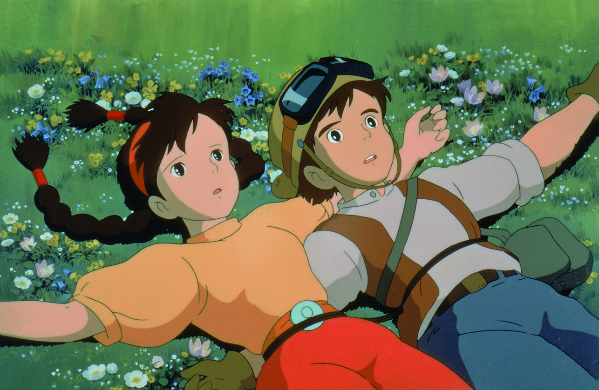
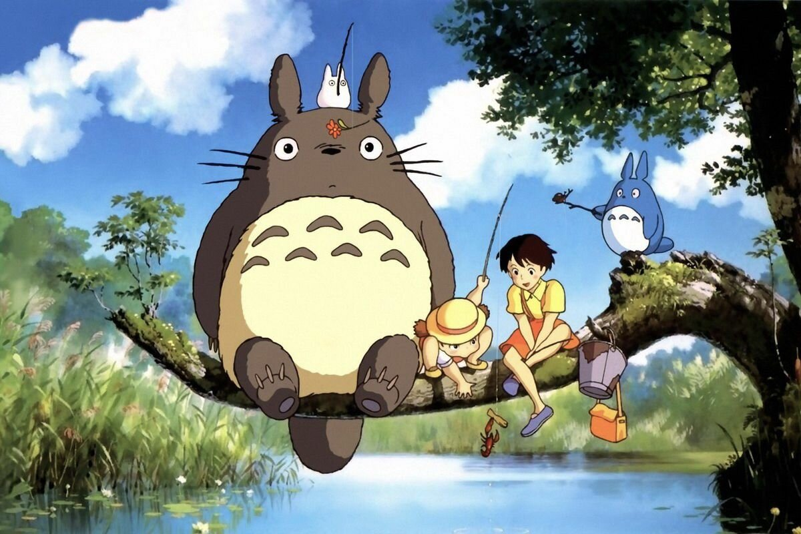
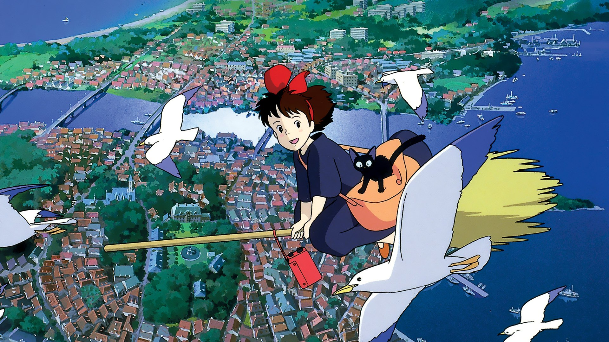
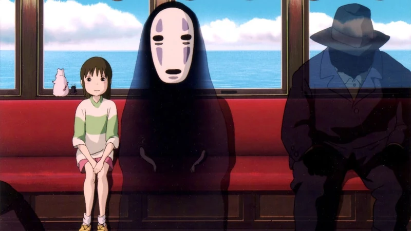
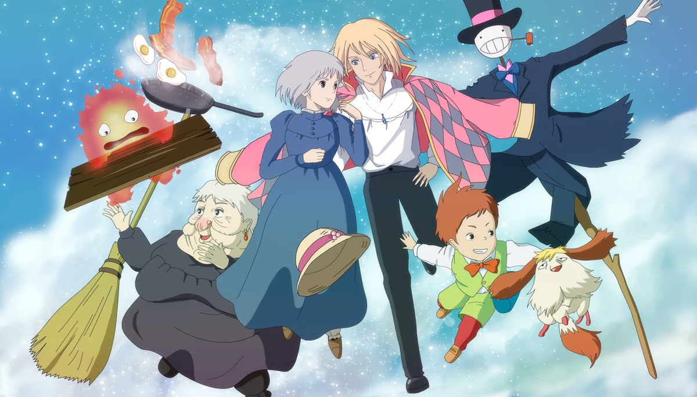
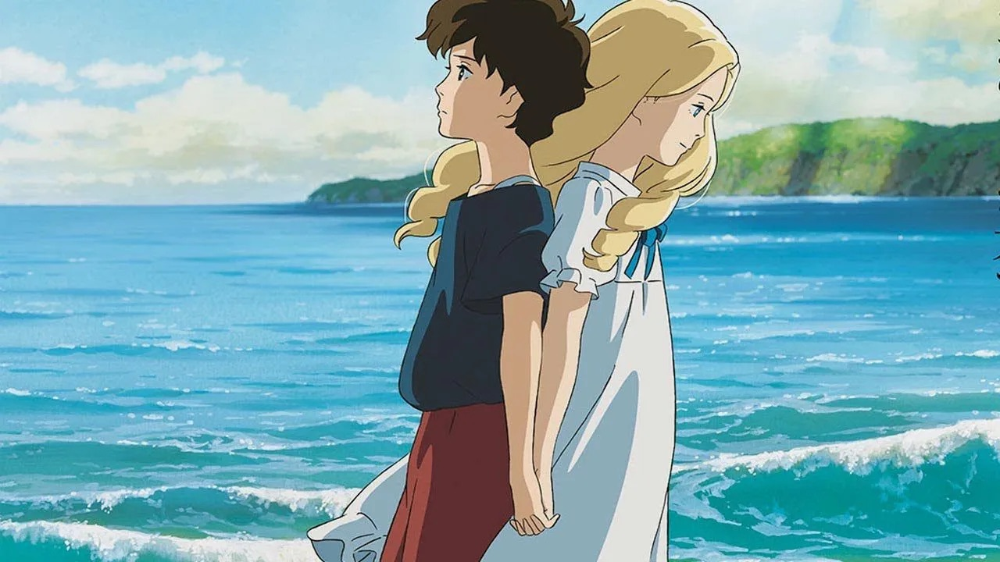

Films
Explore the rich legacy of Studio Ghibli films, filled with magic, adventure, and timeless stories for all ages. Here are some highlights from each decade of the studio’s history.
1980s

Castle in the Sky (1986)

My Neighbor Totoro (1988)
1990s
Princess Mononoke (1997)

Kiki's Delivery Service (1989)
2000s

Spirited Away (2001)

Howl's Moving Castle (2004)
2010s

Ponyo (2008)

When Marnie Was There (2014)